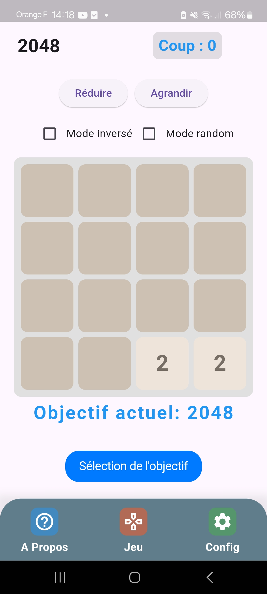
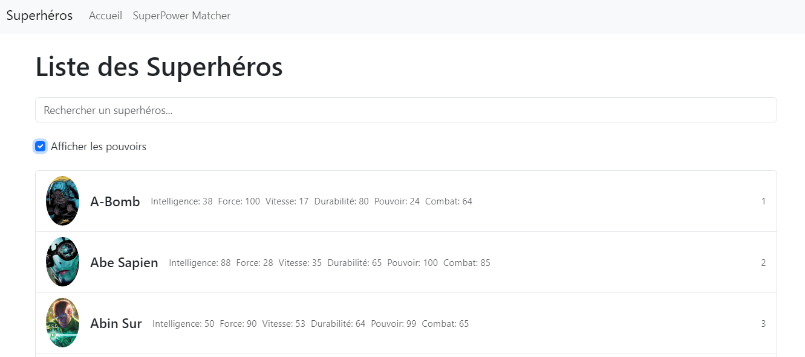

- Stagiaire Développeur Java chez CGI (4 semaines)
- Stagiaire Développeur Java chez CGI (6 semaines)
- HTML/CSS/JavaScript
- Bootstrap
- PHP
- MySQL
- C#
- Java
- Flutter/Dart
- Communication
- Adaptabilité
- Entraide
- Esprit d’équipe
- Autonomie
- Ponctualité
Projets

Jeu mobile Flutter
Notre projet était ici de développer un jeu de type 2048 avec quelques variantes et options sur les calculs de la grille et de faciliter le jeu permettant à la fois des défis plus abordables pour les joueurs, mais aussi une simplification dans le développement et l’algorithmie de celui-ci.

Application web Vue.js
L'objectif de cette application web était de se familiariser avec les concepts clés de Vue.js tout en créant une application web interactive sur le thème des superhéros. En apprenant à récupérer des données à partir d'une API externe, à les afficher dynamiquement, et à créer des fonctionnalités interactives.